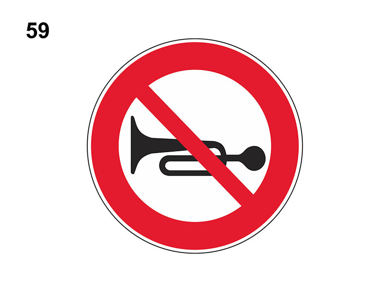

Divieto di segnalazioni acustiche

E' un segnale di divieto.
Vieta l'utilizzo di qualsiasi segnalatore acustico (clacson, trombe), se non nei casi di pericolo immediato o durante il trasporto di feriti o ammalati gravi.
Vieta l'utilizzo di qualsiasi segnalatore acustico (clacson, trombe), se non nei casi di pericolo immediato o durante il trasporto di feriti o ammalati gravi.